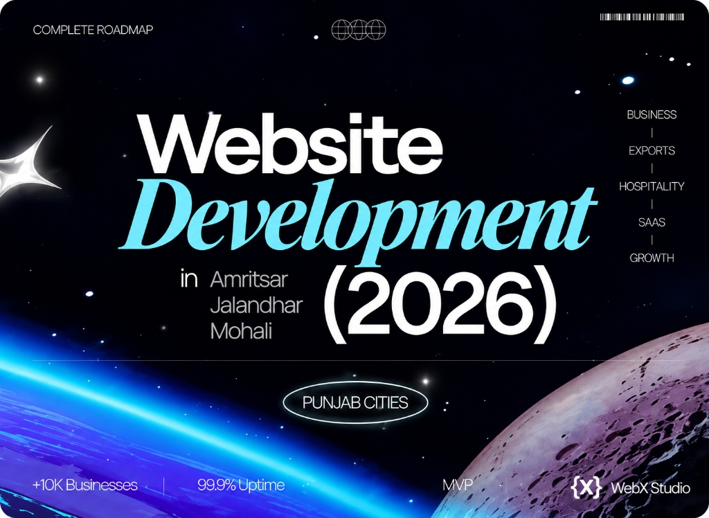

Website development across Punjab: Amritsar, Jalandhar & Mohali
Every Punjab city has a different economy - and a different kind of website it actually needs. Here’s a practical, city-by-city guide to website development in Amritsar, Jalandhar, Mohali and beyond, with real 2026 costs and how to hire well.

“Website development in Punjab” means very different things in different cities. A holy-city hotel in Amritsar, a hand-tools exporter in Jalandhar and a SaaS startup in Mohali all need a website - but not the same website. Getting this match right is the difference between a page that just exists and one that actually brings in business.
We’re Web{X} Studio, a studio based in Ludhiana that builds for clients right across Punjab and internationally — start with our web development agency in Ludhiana. Here’s how we think about each major market - and what your business should look for.
Amritsar: tourism, hospitality & retail
Amritsar’s economy leans on tourism, hospitality, food and retail - drawn by the Golden Temple and a steady flow of domestic and international visitors. Businesses here win online with:
- Fast, mobile-first design - most visitors are on phones, often on patchy mobile data.
- Booking and enquiry flows - hotels, tour operators and restaurants need direct bookings, not just a phone number.
- Strong local SEO - ranking for “hotels near Golden Temple” or “best dhaba in Amritsar” drives real footfall.
- Multilingual-ready content - a mix of Indian and overseas visitors rewards clean English plus regional touches.
Jalandhar: sports goods, tools & exports
Jalandhar is a global name in sports goods, hand tools, leather and rubber - an export economy where the website is often the first thing an overseas buyer sees. What matters most:
- Export credibility - clean, professional English, real factory photos, and certifications build instant trust.
- Clear product catalogues - buyers want to browse ranges, specs and MOQs quickly.
- Enquiry-driven design - prominent RFQ and WhatsApp enquiry paths, not a buried contact page.
- Speed for international visitors - a site that loads fast from Europe or the US, which means real Core Web Vitals work.
Mohali & Chandigarh: IT, SaaS & startups
Mohali and neighbouring Chandigarh form Punjab’s tech corridor - IT services, SaaS products and funded startups. These businesses need product-grade digital work:
- Conversion-focused product sites - clear messaging that turns visitors into demos and trials.
- Custom UI/UX and dashboards - not templates; interfaces users actually enjoy.
- Web apps and portals - many need real engineering, not just a marketing page.
- Scalable, maintainable code - built to grow with the product and the team.
Building for a business anywhere in Punjab?
Whether you’re exporting from Jalandhar, hosting guests in Amritsar or launching a startup in Mohali, we’ll design the right website for your goal - and send a clear INR quote within two business days.
Start your projectLudhiana, Patiala & Bathinda too
Beyond the big three, Ludhiana’s manufacturers and exporters, Patiala’s education and heritage brands, and Bathinda’s energy and agri businesses all benefit from the same fundamentals: custom design, speed, SEO and mobile-first thinking. The recipe doesn’t change - only the emphasis does.
What it costs across Punjab (2026)
| Type | Typical range (INR) | Common in |
|---|---|---|
| Business / brochure site | ₹80k-₹2.5L | All cities |
| Export B2B catalogue | ₹1.5L-₹4L | Jalandhar, Ludhiana |
| Booking / hospitality site | ₹1L-₹3L | Amritsar |
| SaaS / product site + app | ₹3L-₹20L+ | Mohali, Chandigarh |
Costs are broadly similar across cities - the studio you choose matters far more than the pin code. See our Punjab website cost guide for the full breakdown.
Match the website to the city’s economy, and it stops being a brochure and starts being a sales channel.
How to hire well, wherever you are in Punjab
- See live work for businesses like yours, and open it on your phone.
- Check speed with PageSpeed Insights - green scores signal real engineering.
- Confirm the team that builds it, and that you’ll own the domain, hosting and files.
- Match the studio to your goal - exports, bookings or SaaS each need different strengths.
A good studio doesn’t need to be on your street - it needs to understand your market and build to a standard your customers respect. For most Punjab businesses in 2026, that combination is exactly what turns a website into an asset.